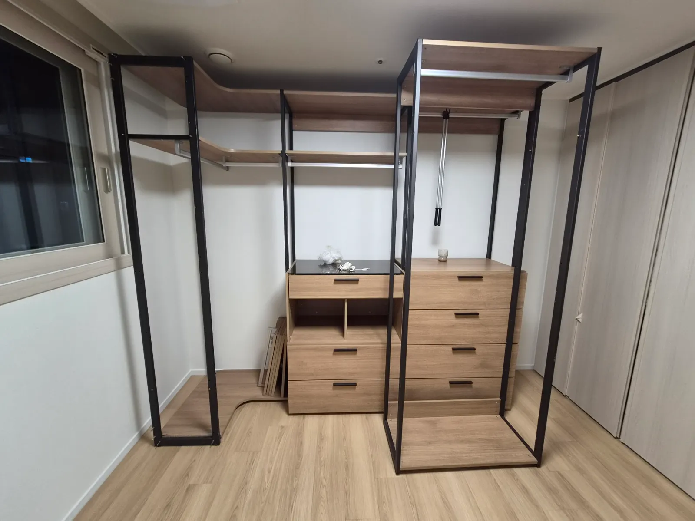

Measure
시스템행거
치수 재는 법
줄자 하나면 견적에 필요한 치수를 직접 잴 수 있습니다.
이전설치 상담에서 가장 먼저 필요한 것은 새 공간의 치수입니다. 벽 폭과 천장 높이만 정확해도 지금 행거를 그대로 세울 수 있는지, 칸 수를 줄여야 하는지 판단하기 쉬워집니다.
치수는 몰딩이나 걸레받이를 빼고 실제로 행거가 닿는 면을 기준으로 재는 것이 중요합니다. 아래 순서대로 재서 사진과 함께 보내주시면 코니처가 배치를 확인해 드립니다.

Situations
꼭 재야 하는 네 가지
벽 폭
행거를 세울 벽의 끝에서 끝까지, 바닥 가까이에서 잽니다.
천장 높이
바닥에서 천장까지, 폴이 설 위치에서 잽니다.
깊이
벽에서 방문이나 가구까지 남는 거리를 잽니다.
창문 위치
바닥에서 창틀 아래까지 높이와 벽 끝에서의 거리를 잽니다.
Checklist
치수 재는 위치
| 치수 | 재는 위치 | 주의할 점 |
|---|---|---|
| 벽 폭 | 걸레받이 바로 위 | 모서리가 직각이 아닐 수 있어 위아래 두 번 잽니다 |
| 천장 높이 | 폴이 설 자리 | 몰딩이 있으면 몰딩 아래까지 잽니다 |
| 깊이 | 벽에서 문 끝까지 | 문이 열리는 반경을 포함합니다 |
| 창문 | 창틀 아래 높이 | 선반이 창을 가리는지 봅니다 |
| 콘센트·스위치 | 바닥에서 높이 | 서랍장에 가려지지 않게 합니다 |
Process
치수 보내는 방법
줄자 준비
cm 단위 줄자를 준비합니다.
벽 폭 재기
위아래 두 곳을 재서 짧은 쪽을 적습니다.
천장 높이 재기
폴이 설 두세 곳을 잽니다.
사진에 적기
벽 사진 위에 치수를 적거나 메모로 함께 보내주세요.
문자 보내기
지금 행거 사진과 함께 보내주세요.
FAQ
자주 묻는 질문
줄자가 없어요
벽 사진에 A4 용지처럼 크기를 아는 물건을 대고 찍어 주시면 대략 파악할 수 있습니다. 정확한 설치를 위해서는 줄자 치수가 좋습니다.
평면도 치수를 써도 되나요?
평면도 치수는 실제와 조금 다를 수 있어 가능하면 직접 재 주세요.
천장 높이가 위치마다 달라요
가장 낮은 곳과 폴을 세울 곳의 높이를 같이 알려주세요.
지금 행거 치수도 필요한가요?
전체 폭과 칸 수만 알려주시면 됩니다. 모르시면 사진만 보내주셔도 됩니다.
단위는 뭘로 적나요?
cm로 적어 주시면 됩니다.